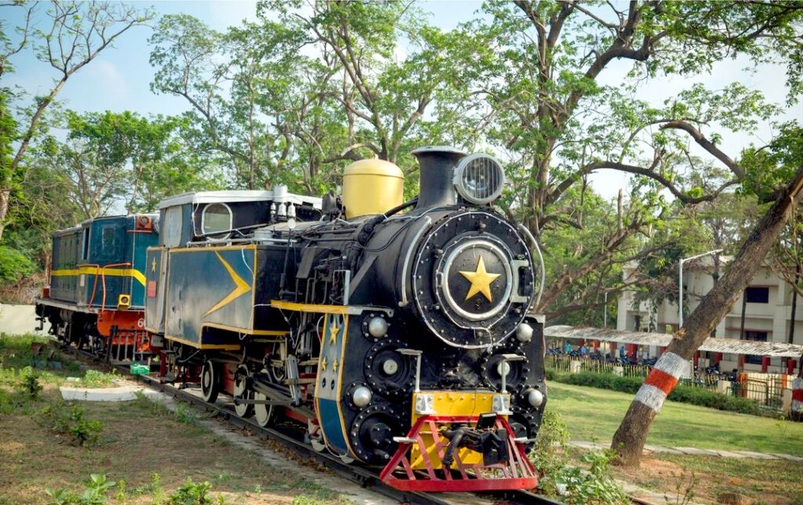

|

|
- The Chennai Rail Museum, located in the heart of the city, is a fascinating destination for railway enthusiasts and history buffs alike. Established in 2002, the museum showcases the rich history of India's railway system, with a particular focus on the Southern Railway. The museum collection includes a wide range of locomotives, carriages, and other artifacts that illustrate the evolution of rail transport in India. Visitors can explore the evolution of trains, from the early steam locomotives to the more modern electric and diesel engines, each piece telling a unique story about the industrial growth of the country and technological advancements.
- One of the museum's key highlights is the presence of several vintage trains that have been preserved in their original form, offering a glimpse into the past. The star attraction is the 1800s-era steam locomotive, which has been meticulously restored to reflect its authentic design. In addition to the locomotives, the museum also houses rare railway artifacts such as old signal systems, tickets, uniforms, and photographs that provide a deeper understanding of the working life of the Indian Railways. Interactive displays and informative exhibits allow visitors to learn about the history of train travel and its impact on India social and economic development.
- The museum also offers a more hands-on experience with a toy train ride, which is a hit among families and children. It takes visitors on a short journey around the museum premises, providing an exciting way to explore the different sections of the collection. With its extensive exhibits, educational programs, and well-maintained environment, the Chennai Rail Museum provides a perfect blend of history and entertainment. It is a must-visit for anyone interested in the legacy of Indian railways and offers a unique experience that highlights the significant role rail transport has played in shaping the country.
|